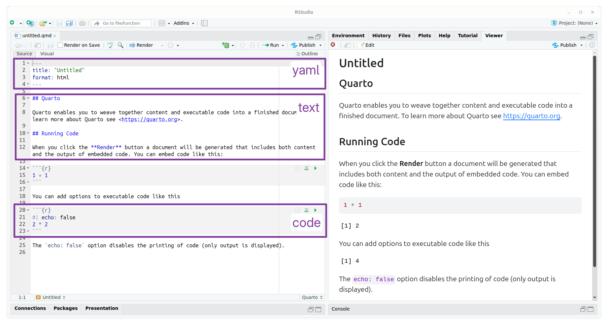
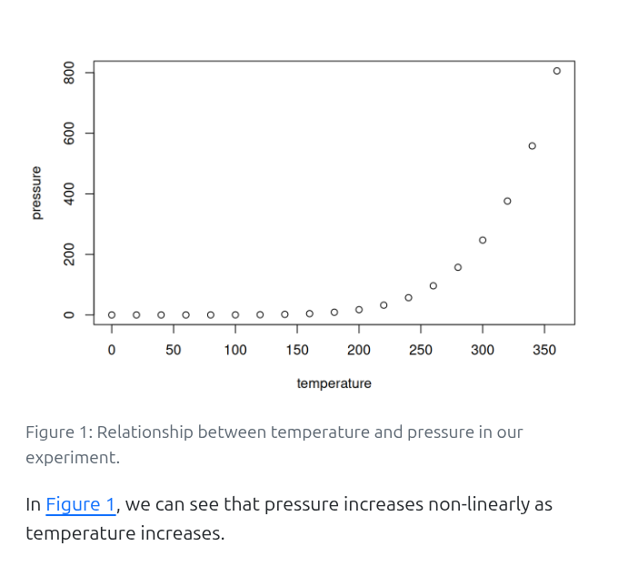
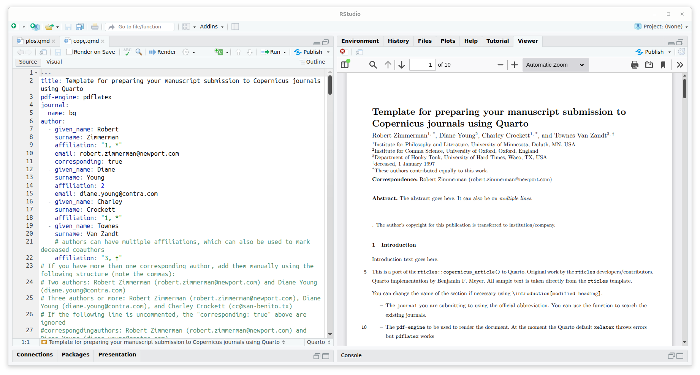

An R reproducibility toolkit for the practical researcher > Day 1 > 03: Reporting with Quarto
03: Reporting with Quarto
By Paola Corrales and Elio Campitelli
Quarto files
An Quarto file is a plain text file, with some rules and special syntax that allow you to write code and text together. When rendered, code will be evaluated and executed and text formatted into a reproducible report or document that is nice to read and contains all your work.
This is really critical to reproducibility since it automates the creation of a paper or report, which also has the side effect of saving time. Since the document will recreate the figures and text each time you render it, you won’t need to copy-paste plots between R and Word, LaTeX or whatever tool you are using to write your report each time you make some trivial change.
Now let’s create a new Quarto file. In RStudio you can use the menu bar:
File → New File → Quarto Document
A new window will open where you can optionally complete with the title of your document, author and the output format. Let’s try HTML output first. A new file with a template document will open up when you click OK. This includes a brief demonstration of Quarto capabilities. You can try to render the file to see the output document.
Your turn
-
Create a new Quarto file. You can choose the output format.
-
Render the sample document.
-
Compare the “source file” with the “output file”. Can you identify the different sections of the file?
What about R Markdown?
Quarto is a language agnostic implementation of R Markdown. They share most of their syntax, therefore you can pick up Quarto easily if you’re already familiar with R Markdown. If you are not, then most of what you learn about Quarto here will be applicable to any R Markdown project that you find in the future.
File structure
Any Quarto file will have 3 sections or areas:

-
The top part is called the header and uses YAML syntax and includes the title and the output type (which in this case is an HTML document) and other metadata.
-
Below the header goes the document proper, which has white and grey sections. These are the two main sections that make up a Quarto file:
-
Grey sections are code chunks. They will be evaluated in order and any output will be inserted in the output document.
-
White sections are text sections and support markdown for styling.
-
Header
The header is a series of instructions organized between three dashes (---) that define the global properties of the document, such as the title, the output format, authorship information, etc.
You can also change options associated with the output format, such as the style of the table of contents or index.
The header will grow to be much larger as you start using templates and customised reports.
The YAML format allows you to define hierarchical lists in a human-readable way. For example:
---
title: "My first quarto"
format:
html:
toc: true
toc_float: false
---
Mind the indentation!
It is very important to maintain the indentation of the elements, since it defines the hierarchy of each element. Many of the errors you’ll find when rendering will be rooted in indentation issues.
Code chunks
R code is written inside code “chunks”.
Code chunks start with ```{r} and end with ```.
Everything you include between these delimiters will be interpreted by R as code and will be executed it when the file is rendered
Any output (graphics, tables, text, etc.) will be inserted into the final document in the same order as they are in the Quarto file (or “roughly in the same order” if you’re rendering to PDF).
You can create a new chunk with:
- The “+C” green bottom on the top right of the document
- A very handy shortcut:
Ctrl+Alt+IorCommand+I - Writing ```{r} by hand (but why would you?)
While the code will run line by line when you render the file, during writing it is very convenient to run individual chunks interactively as if it were in the console.
To run the line where your cursor is use the shortcut:
Ctrl+Enter or Command+Return
But you can also run the code of the whole chunk with:
Ctrl+Shift+Enter or Shift+Command+Return
By default, the output will appear immediately below the chunk.
Text
Plain text sections of a Quarto file is interpreted as Markdown. You can get a guide to quarto in this cheat sheet, but here is a minimum syntax to get you started:
- headers start with
#or##and so on (it’s important to put a space after the last#). - bold text is surrounded with
**or__. - and italic text, with
*or_.
You can also add equations and other symbols with in-line LaTeX math (`$E = mc^2$` looks like \(E = mc^2\)) or in its own line as:
$$
y = \mu + \sum_{i=1}^p \beta_i x_i + \epsilon
$$
Which will render like this:
y = \mu + \sum_{i=1}^p \beta_i x_i + \epsilon
In-line code
You may find yourself mentioning results in the text, for example something like “the average minimum temperature for the month of March was 18 degrees”. And it is also possible that this value will change if you use a different database or if you then generate the same report for different months. The chances of you forgetting to update that “18” are high, that’s why Quarto also has the possibility to incorporate in-line code.
Let’s imagine that you have a variable temperature to which you assign the value “18”:
temperature <- 18
To use that value in the text you have to put the name of that variable between two “`” and to indicate that it is R code this way `r temperature`.
Then if at any time the value of the variable changes, the next time you render the document it will be updated in the text.
Chunk control
You may have noticed that code chunks in the template document include some lines that start with #|.
These are chunk options that can control control how the chuck will behave when the file is rendered.
Usually the code chunk will be included in the output, which is fine when you or the person that will read the report wants to see the code that generates those results, but it might not be what the final audience of the report might need.
It’s up to you to decide if you want to show the code or not.
To change the options of a code chunk, all you have to do is list the options inside the square brackets. For example:
```{r}
#| label: chunk-name
#| echo: false
#| message: false
```
A particularly important set of options are the ones that control whether the code is executed and whether the result of the code will remain in the report or not:
-
echo: falseruns the code chunk and displays the results, but hides the code in the report. This is useful for writing reports for people who do not need to see the R code that generated the graph or table. -
include: falseruns the code but hides both the code and any output. It is useful to use in general configuration chunks where you load libraries. -
eval: falseprevents the code chunk from being run at all. Naturally, it will not display results either. It is useful for displaying example code if you are writing, for example, a document to teach R or if you want to suppress specific parts of your code.
If you are writing a report where you don’t want any code to be shown, adding echo: false to each new chunk becomes tedious.
The solution is to change the option globally so that it applies to all chunks.
You can do this by changing the default execute options in the yaml header:
execute:
echo: false
RStudio Visual editor
Recent versions of RStudio include a Visual Editor which allows you to write Markdown markup, add citations, tables, etc. with a friendly GUI.
Cross-references
It is very common to reference generated figures and tables in the text.
To do this, you need to use a particular prefix as chunk label and then write @label in the text.
For figures, you need to use the “fig-” prefix, like this:
```{r}
#| label: fig-pressure
#| fig-cap: Relationship between temperature and pressure in our experiment.
#| echo: false
plot(pressure)
```
In @fig-pressure, we can see that pressure increases non-linearly as temperature increases.
Will render as

Figure control
If the output of the chunk is a figure, you have a ton of options to control its aspect.
From its size, resolution, etc..
You can start typing “fig-” inside the #| to explore the options.
For tables, you need to use “tbl-”.
Managing references
If you are here to use Quarto to write papers or reports, you may need to add references to other papers or sources. Similarly to LaTeX, you’ll need a .bib file with all the references you want to include in the document. While we don’t have time to explore tools to create and manage this type of file, we recommend you to explore Zotero.
Provided you have the references.bib file in your project (you can try it with
this example), you need to include that in the yaml of the file:
---
title: "My first quarto"
format:
pdf
bibliography: references.bib
---
Each reference will have a key that defines it.
To insert a reference with, use @key, or [@key] or [@key; @key2] to insert them inside parenthesis.
It is also possible to use the LaTeX syntax but we prefer the markdown syntax to be able to render the report to many type of outputs.
Quarto Templates
If you have to write a report or document for your institution or maybe a paper for a scientific journal, you may want to use a template to change the look of the final document. Depending on the output format, templates will be different. In this section will focus on PDF files.
Besides plain PDFs, Quarto can render to particular styles of PDFs via templates. For scientific journals you may find the quarto-journals repository useful, since it includes templates for various popular publishers. You can find Quarto templates for other journals created by members of the community. For example, searching for “copernicus quarto template” brings up this repository.
To use a particular Quarto template you need to run this code in your terminal (not in the R console)
quarto use template benfmeyer/quarto-copernicus
This will ask you a couple of questions to configure the location of the template and will create a new Quarto sample document.

Your turn!
- Create a new Quarto file using one template of your choosing.
You can browse official templates or search online. - Check the options in the YAML and change a few of the fields. It doesn’t have to be real information!
- Render the document to see the output.
Beyond the usual templates
Now, what happens if there is no ready-made Quarto template for the journal you want to submit to? Usually, journals provide LaTeX templates that you can use and adapt to use within Quarto. This will require some knowledge of LaTeX and Pandoc templates, and some patience and coffee/tea/mate to deal with rendering errors. If you go through the trouble of adapting a template, consider bundling it to a template and releasing it so that others can benefit from your sweat and tears.
One estimate put the amount of work required to format and re-format academic submissions to comply with journal templates at around 230 million USD in 2001. Also, it’s not always mandatory to submit your paper using the journal template.
We are going to adapt the AGU Geophysical Research Letters LaTeX template to use it with Quarto.
The way rendering to LaTeX work is that we have a LaTeX template with special notation to reference to variables in our document. So, for example, the template might have a section with
$if(abstract)$
\begin{abstract}
$abstract$
\end{abstract}
$endif$
This means that if there is a section in the yaml named “abstract” it will insert “\begin{abstract}”, the contents of abstract and “\end{abstract}”.
We can do this with any variable in our yaml to customise the LaTeX output, but the only variable that we really must add is body, which has the actual content of the document.
We can, in theory, hardcode the rest of the information, such as title, authors, etc in the template and choose how complex you want to make it.
It’s easiest to see how this works with a simple, barebones example. This quarto document has a title, an author, and simple content. The yaml also specifies that the pdf format will use the file “template.text” as template and will not delete the intermediate LaTeX file after rendering.
---
title: "A very nice title"
author: My name
format:
pdf:
template: template.tex
keep-tex: true
---
## Introduction
This is the introduction of the manuscript.
The file template.tex is this:
\documentclass{article}
\begin{document}
$body$
\end{document}
When rendering, Quarto is going to replace $body$ with the body of the document and output this LaTeX document:
\documentclass{article}
\begin{document}
\subsection{Introduction}\label{introduction}
This is the introduction of the manuscript.
\end{document}
Because our template doesn’t use the title variable from our header, our final PDF doesn’t have the correct title.
We can use the title variable by using $title$.
The template now becomes
\documentclass{article}
\title{$title$}
\begin{document}
\maketitle
$body$
\end{document}
And after render, the resulting LaTeX document looks like this
\documentclass{article}
\title{A very nice title}
\begin{document}
\maketitle
\subsection{Introduction}\label{introduction}
This is the introduction of the manuscript.
\end{document}
One final element to make templates work are partials. Many Quarto and Pandoc features depend on code that comes with the built-in templates. These won’t work in our template, which lacks that code. For example, if we wanted to add code blocks that render in our document like this:
---
title: "A very nice title"
author: My name
format:
pdf:
template: template.tex
keep-tex: true
---
## Introduction
This is the introduction of the manuscript.
``` r
plot(pressure)
```
<img src="https://reproducibility.rocks/materials/day1/03-quarto/index_files/figure-html/unnamed-chunk-4-1.png" alt="" width="672" />
the document will fail to render with error
LaTeX Error: Environment Shaded undefined.
See the LaTeX manual or LaTeX Companion for explanation.
Type H <return> for immediate help.
...
l.13 \begin{Shaded}
This is because Quarto uses the “Shaded” LaTeX environment, that our template doesn’t define, to display code highlighting. But we don’t need to define it, we can insert the pandoc.tex partial, which includes that (and many other) definitions
\documentclass{article}
$pandoc.tex()$
\title{$title$}
\begin{document}
\maketitle
$body$
\end{document}
You can read what partials are available for Quarto in the LaTeX templates documentation.
-
Create a new Quarto file using PDF as a output format and save it into your project (for example,
paper.qmd). -
Download the AGU Geophysical Research Letters template from here. Inside the file there’s a folder with a bunch of files. Extract all those files into the same folder you saved the Quarto file. You need to have a folder in your project with these files:
. ├── agujournal2025.cls ├── agujournaltemplate.tex ├── agu-logo-large.pdf ├── agu-logo-small.pdf ├── paper.qmd ├── tweaklist-git-moderncv-fixed.sty └── wiley-macros.tex -
Change the YAML of the R Markdown file to include the following:
--- title: "A very nice title" author: My name format: pdf: template: agujournaltemplate.tex keep-tex: true ---Take care to respect the identation and that each parameter is in its own line.
-
Render the file. You should get a PDF with the contents of the AGU template and not your document. This is to make sure that Quarto is using the template and that the template works.
-
Add
$pandoc.tex()$before\begin{document}to add support for Quarto and Pandoc features. You only need to do this if you use those features, such as code highlighting. -
Let’s now include the content of the R Markdown file. First, delete all the sample content from the original template; everything between
\end{abstract}and\bibliography{wiley}(without removing those lines!) and replace it with$body$. -
Render the file. You should get a PDF with the contents of the Quarto document but with the title, abstract, authors, etc. from the template.
-
Now let’s add some customisation. Again in the
agujournaltemplate.texfile, change\title{=enter title here=}(line 78) for\title{$title$} -
Render the file. Now, the title in the R Markdown file and the PDF should match.
-
You can add new options to the YAML header and then use the same trick so they are used by the LaTeX template. For example, add a new option called “abstract” and write some text, like this:
--- title: "A very nice title" author: My name format: pdf: template: agujournaltemplate.tex keep-tex: true abstract: "This is the very interesting abstract." ---Then, in the LaTeX template search for
[ enter your Abstract here ]and replace it with$abstract$. -
Render the file. The abstract in the PDF should now match the abstract in your yaml header.
-
(Optional) Add more variables, such as a Plain Language Summary, author, mail of the corresponding author to the yaml heather and modify the LaTeX template to use them.
Having problems? You can watch a video on how to solve this activity here and follow along (the video was made with an slightly older version of the template but everything is almost the same except for the precise line numbers).
Pandoc template syntax
The template uses something called Pandoc Templates, which has a specific syntax. You can read more in the documentation.